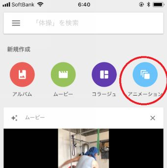
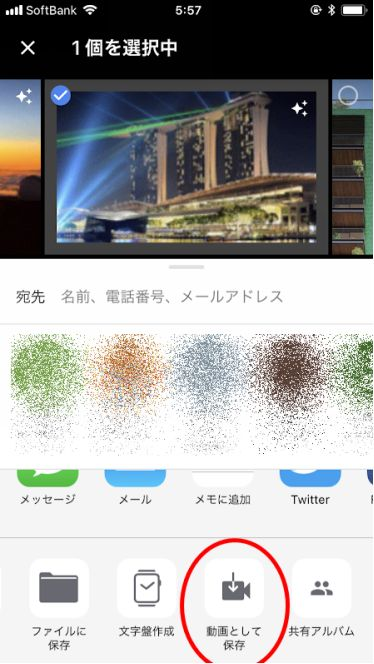

| A.I.サブリミナル: 人工知能を活用した成功法則 A.I.成功法則 (マキコミブックス) | |
| 六本木タツヤ | |
| Makikomi Works LLC (2018) | |
もくじ
本書は、 「A.I.成功法則」 シリーズの第４弾です。
第１弾 「A.I.アファメーション」
第２弾 「A.I.クエスチョン」
第３弾 「A.I.イングリッシュ」
に続く、本書のタイトルは 「A.I.サブリミナル」 。
最新の人工知能テクノロジーと、昔からある「成功法則」とを組み合わせて、思い通りの人生を構築しよう、というのがシリーズの趣旨です。
既刊を読んで読んでいただければ、その全貌がよく分かりますが、もちろん本書単独でも問題ありません。
必要なのは、一台のスマホと、Googleアカウントと、ネット環境だけ。
たったこれだけで、あなたの人生が大きく変わります。
A.I.成功法則の第４弾、「A.I.サブリミナル」。
ぜひ、実践してください。
「サブリミナル効果」とは......。
「潜在意識（ subliminal） 」に働きかけることによって現れる効果、のことです。
事例を挙げれば、ある映画の中に「コカ・コーラを飲め」「ポップコーンを食べろ」というメッセージを隠したところ、その日のコーラとポップコーンの売り上げが倍増した、という話があります。
すごく短い時間で文字を表示したので、意識では判別できないものの、人間の潜在意識の中にそのメッセージが残って、実際に行動させた、という話です。
本当かどうかは分かりませんが、実際に潜在意識を活用している私からすれば、
「あってもおかしくないな」
と思っています。
この「A.I.成功法則」シリーズすべてにおいて、実際に潜在意識を活用する方法を、紹介しているくらいですから。
たとえば、第１作の「A.I.アファメーション」。
これは、「私は絶対に成功する」などの肯定的な宣言、断言（アファメーション）をスマホに入力し、それをA.I.によって「自動読み上げ」してもらうという手法です。
これを、一日中、流しっぱなしにしていると、いつの間にか潜在意識に、「私はできる」という宣言が刷り込まれます。
その結果、毎日の行動や思考、選択において、無意識のうちに「成功する方」を選ぶようになる、という手法です。
第２作の「A.I.クエスチョン」は、その発展形です。
私たち人間の脳には、膨大な情報が収められています。
世界中のどんなスーパーコンピューターでもかなわないほどのデータ量と、処理スピードを備えているのが、私たちの脳なのです。
その脳に、適切な「質問」をしてやれば、脳は自動的に、適切な答えを探し出してくれます。
そこで、「一週間以内に一千万円を得るには、どうしたらいい？」といった質問を、A.I.に読み上げてもらい、それを無意識で聞き続けるうちに、脳が自動的に最適解を導き出してくれる、という手法です。
そして第３弾の「A.I.イングリッシュ」。
これは、「A.I.アファメーション」と「A.I.クエスチョン」を、
「英語で」
やるという方法です。
本来、アファメーションという手法は、英語圏の人たちの間から生まれてきました。
英語は日本語と違って、「主語」の次はすぐに「述語（動詞）」になります。
つまり、「私は、なる」「私は、手に入れる」のように、シンプルで力強い文章が作られます。
この方が、潜在意識には刻まれやすいのです。
さらに、英語のリスニングの訓練にもなりますので、一石二鳥の手法です。
以上を踏まえて、本作のテーマ「A.I.サブリミナル」の説明です。
今までの３作品では、あくまでも「言葉」のみを、潜在意識に刷り込んでいました。
しかし、人間には、聴覚のほかにも「視覚」や「嗅覚」「触覚」などがあります。
その中でも特に、「視覚」つまり「目」から得られる情報量は、80％とも90％とも言われています。
だったら、A.I.によって潜在意識に刻み込むという手法においても、もっと「視覚」からの情報を活用するようにした方が、より大きな効果が期待できるということです。
そこで私が開発したのが、「A.I.サブリミナル」という手法です。
具体的には、自分が将来「達成したい」目標を、
「画像で」
集めます。
そして、その画像を、潜在意識に刻み込まれるまで、眺め続けるという手法です。
これは別に珍しい方法ではなく、昔から「ビジョンボード」とか「宝地図」というやり方で活用されています。
自分が行きたい世界の絶景、泊まりたいホテル、乗りたい車、着たいファッションなどの写真を集め、コルクボードに貼り、壁にかけておく。
それを毎日毎晩、眺めることで、やがてそれが実現する......。
という手法なのですが、さて、効果のほどは？
正直、「それほどでもない」というのが実感です。
そこで、これら「ビジョンボード」を改良し、いつでもどこでもスマホで手軽に、誰でも楽しみながら活用できる方法を考えました。
それが、「A.I.サブリミナル」なのです。
では、実際にやってみましょう。
まず、インターネットで、自分が「目標」とするものの画像を集めます。
そして、その画像を、
「Google Photo」というアプリにまとめておきます。
（Apple） https://goo.gl/MrdLvt
たとえば、「行きたい旅行先」の画像を集めると、このようになります。
これを四六時中、眺めているだけでも、潜在意識には刻み込まれ「なくもない」と言えます。
しかし、さらに効果を発揮させるために、これらの画像を「パラパラ動画」に加工します。
一枚につきゼロコンマ何秒という短い時間で画像が切り替わり、さらにそれがエンドレスで流れる。
それを見たほうが、潜在意識に上りやすいからです。
では、そのやり方です。

Google Photoにはこのように、「ムービー」とか「アニメーション」という機能があります。
これこそが、A.I.による機能なのです。
Googleが開発した人工知能が、集めた写真の中から、「自動的に」動画を作ってくれるのです。
他にも、風景写真を「補正」して美しくしてくれるとか、人間の顔まで自動で補正してくれる、なんて機能もあります。
もうそのうち、「フォトレタッチ」なんて仕事は、人間がやる必要はなくなってくるでしょう。
この「アニメーション」という機能を使って、集めた目標画像を、「動画」にしてもらいます。
「アニメーション」のアイコンを選ぶと、
このような選択画面になります。
動画にしたい画像を選択して、あとは右上の「作成」を押すだけです。
こうして出来上がった動画は、こちらで見られます。
http://www.mobypicture.com/user/t_roppongi/view/20281980
この動画を、スマホにダウンロードします。

この「動画として保存」を選ぶと、スマホに保存されます。
あとは、このパラパラ動画を、暇さえあれば再生して眺めるだけ！
さらに、既存の「A.I.アファメーション」や「A.I.クエスチョン」も併用して、
「私は今年中に、世界一周旅行に行く」
「そのための費用を集めるには、どうしたらいい？」
のような音声も、エンドレスで流しっぱなしにしながら、動画を眺める。
すると、視覚と聴覚が同時に刺激されるので、さらに効果が高まります！
以上が、「A.I.サブリミナル」の概要です。
人生とは、自分の思い通りに変えることができます。
自分の欲しいものが手に入り、行きたいところに行けて、やりたいことができるようになります。
ただし、そのために「現状」を変えようとしても、効果はありません。
なぜなら、「現状（現在）」というのは、次の瞬間には「過去」になってしまうからです。
過去になってしまっては、もう、手の施しようがありません。
だから、「現状」を変えようとしても、無駄なことなのです。
では、どうしたらいいのか？
「未来」を変えればいいのです。
自分はこうなりたい、こういうところに行きたい、という「未来」を、はっきりと思い描くことができれば、
「その瞬間に」
現状も変わります。
もちろん、「いきなり」大金持ちになったり、豪邸に住めるようになれるわけではありません。
しかし、未来のあなたは、実際にそれを手にしているのです。
だったら、そのために「現在」のあなたは、どうあるべきか？
何をするべきか？
これがわかるようになります。
あとは、その「やるべき」ことを実行すればいいだけ。
その繰り返しで、自分が決めた未来に、近づくことができるというわけです。
これが、潜在意識を活用した成功法則の概要です。
ほとんどの「成功者」は、実際にこのような法則を活用しているのです。
そして、その効果をより高めるのが、本書で紹介した「A.I.サブリミナル」です。
私も、この手法を試し始めてからわずか数日で、驚くような効果が表れています。
ぜひあなたも、この方法を試してみてください。
2018年5月17日
六本木タツヤ
禁煙しないでタバコをやめる! ニコアン・セラピー
デブアン！ : デブラウィルスをアンインストールして、ダイエットもリバウンドもせずに腹筋を割る方法
本気でやせたければお酒をやめなさい: プロも知らない酒アン・ダイエット
うつアン！: 「うつ」を完全にアンインストールする七つのソリューション
ジョブアン！: 労働をアンインストールして自由に生きよう
数字嫌いが2ヶ月で、簿記3級に一発合格する勉強法: 一生、学んで暮らしたい
もっとも効率が悪く、もっとも効果が高い「ニホアン英語勉強法」あなたも半年で洋書が読める！: 一生、学んで暮らしたい
洋書1000冊、無料で読もう！Amazon・Kindleで英語の勉強: 一生、学んで暮らしたい
50歳からの宅建一発合格！ 一生、学んで暮らしたい
人間は、まばたきするたびに生まれ変わっている: すべての悩みが一瞬で消し飛ぶ、まばたきリフレッシュ
フルフィルノート: すべての目標は必ず実現する！
レスノート: すべてのストレスをストレスレスに！
９時５時スリーパーになろう！: 寝るだけで成功する睡眠術
思い立ったら、すぐ出版！: Amazon Kindleであなたも今すぐ作家デビュー
歌って成功！ アファメーソン: アファメーション＋ソングで脳内リピート・エンドレス！
不安も現実化する: それでもプラスになればいい
富の満ち引き: マネタイド理論
思い立ったら、すぐ出版！: Amazon Kindleであなたも今すぐ作家デビュー
A.I.アファメーション: 自動音声読み上げによる成功法則
A.I.クエスチョン: 自動音声読み上げによる成功法則Part２
A.Iイングリッシュ: 自動音声読み上げによる英語攻略法
行動者諸君！:労働者から、行動者へ
ことわらセールス: 100%絶対に断わられないネットワーク・ビジネス戦略 断わられるセールスから断わらせるセールスへ！
ネットワーク・美女ネス: 美貌と人脈を資産に変える！ 美女がいちばん似合う職業
ネットワーク・ビジネスを上手にことわる３つの質問
2018年1月号★「一生、学んで暮らしたい」まとめ読み : 月刊「一生、学んで暮らしたい」
2018年2月号★「一生、学んで暮らしたい」まとめ読み : 月刊「一生、学んで暮らしたい」
2018年3月号★「一生、学んで暮らしたい」まとめ読み : 月刊「一生、学んで暮らしたい」
2018年4月号★「一生、学んで暮らしたい」まとめ読み : 月刊「一生、学んで暮らしたい」
────────────────────
■ 発行者：六本木タツヤ（辰也）Tony Roppon
■ メルマガ： http://www.mag2.com/m/0001681430.html
■ LINE ：t_roppongi
■ HP： http://makikomi.jp/
■ Twitter： https://twitter.com/t_roppongi
■ Facebook： https://www.facebook.com/Tony.Roppon
■ Instagram：tony_roppon
────────────────────